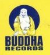

홈 > 브랜드 매거진 > Jubilee Records
Jubilee Records
주빌리 레코드(Jubilee Records)는 1946년 미국 뉴욕에서 설립된 R&B·팝 레이블이다. 두왑·R&B의 명반을 남겼으나 1970년 매각되며 사라졌다.
산업 분야 미디어·엔터테인먼트 · 공개 등급 디렉토리 · 브랜드 평가 3.2 ★
한눈에 보는 브랜드
주빌리 레코드(Jubilee Records)는 1946년 미국 뉴욕에서 설립된 R&B·팝 레이블이다. 두왑·R&B의 명반을 남겼으나 1970년 매각되며 사라졌다.
브랜드 관점
주빌리 레코드는 1940~60년대 R&B·두왑을 다룬 미국 뉴욕의 레이블이었다. 설립·운영 주체, 주력 장르, 대표 아티스트를 함께 보면 미디어·엔터테인먼트 안에서의 위치가 또렷해진다.
시작과 성장
1946년 허브 에이브럼슨과 제리 블레인이 뉴욕에서 설립했고 1947년 블레인이 단독 소유했다. 디 오리올스 등 R&B·두왑과 노벨티 음반을 발매했으나 1970년 뷰렉스에 매각됐다.
브랜드 아이덴티티
Jubilee Records의 아이덴티티는 브랜드명, 로고 사용 여부, 업종 언어, 국가적 배경을 중심으로 정리됩니다. 공개 로고 자산은 추후 권리 확인 후 보강할 수 있도록 텍스트 메타데이터 중심으로 관리합니다.
확장 지식
뉴욕 기반의 R&B·두왑 레이블로 1970년 매각됐다.
제품과 서비스
R&B·팝·노벨티 음반을 발매했다. 디 오리올스 'It's Too Soon To Know' 등이 대표적이다.
사람들
허브 에이브럼슨과 제리 블레인이 1946년 설립했다.
현재 상태
타임라인
정리된 연도형 이벤트가 없습니다.
BI/CI 변천사
확인된 BI/CI 이미지가 아직 없습니다.
함께 읽을 브랜드
롤링 스톤스 레코드(Rolling Stones Records)는 1970년 롤링 스톤스가 세운 음반 레이블이다. 'Sticky Fingers' 등 밴드의 1970~8...

미디어·엔터테인먼트 · 디렉토리Buddah Records부다 레코드(Buddah Records)는 1967년 미국 뉴욕에서 설립된 음반 레이블이다. 버블검 팝과 소울을 아우른 레이블로 글래디스 나이트 앤 더 핍스 등을 발...
 미디어·엔터테인먼트 · 디렉토리J 레코드
미디어·엔터테인먼트 · 디렉토리J 레코드J 레코드(J Records)는 2000년 클라이브 데이비스가 미국에서 설립한 음반 레이블이다. 얼리샤 키스 등을 배출한 R&B·팝 레이블로, 2011년 RCA로 통...
 미디어·엔터테인먼트 · 디렉토리사이어 레코드
미디어·엔터테인먼트 · 디렉토리사이어 레코드사이어 레코드(Sire Records)는 1966년 시모어 스타인과 리처드 고터러가 미국 뉴욕에서 설립한 음반 레이블이다. 라몬즈·토킹 헤즈·마돈나를 배출한 뉴웨이브...
 미디어·엔터테인먼트 · 디렉토리애플 레코드
미디어·엔터테인먼트 · 디렉토리애플 레코드애플 레코드(Apple Records)는 1968년 비틀즈가 설립한 영국의 음반 레이블이다. 애플 코어(Apple Corps) 산하 레이블로 비틀즈의 음반과 메리 홉...
 미디어·엔터테인먼트 · 디렉토리자이브 레코드
미디어·엔터테인먼트 · 디렉토리자이브 레코드자이브 레코드(Jive Records)는 1981년 클라이브 칼더가 좀바 그룹 산하로 세운 음반 레이블이다. 브리트니 스피어스·백스트리트 보이스 등을 배출한 팝·힙합...
 미디어·엔터테인먼트 · 디렉토리AFM 레코드
미디어·엔터테인먼트 · 디렉토리AFM 레코드AFM 레코드(AFM Records)는 1990년대 독일에서 설립된 헤비메탈 전문 음반 레이블이다. U.D.O.·도로 등을 발매한 독일 메탈 레이블로, 현재 소울푸드...
체커 레코드(Checker Records)는 1952년 시카고에서 체스(Chess) 형제가 세운 체스 레코드의 자회사 레이블이다. 시카고 블루스·R&B의 명반을 다수...